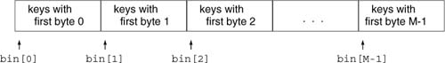
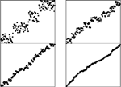
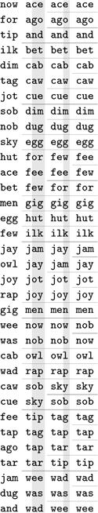
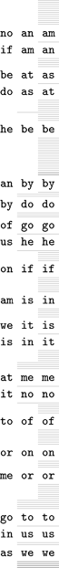
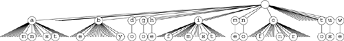
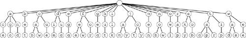

C++ Programming Robert Sedgewick - Princeton University Addison Wesley Professional Algorithms in C++, Parts 1–4: Fundamentals, Data Structure, Sorting, Searching, Third Edition
10.3. MSD Radix Sort
Using just 1 bit in radix quicksort amounts to treating keys as radix-2 (binary) numbers and considering the most significant digits first. Generalizing, suppose that we wish to sort radix-R numbers by considering the most significant bytes first. Doing so requires partitioning the array into R, rather than just two, different parts. Traditionally we refer to the partitions as bins or buckets and think of the algorithm as using a group of R bins, one for each possible value of the first digit, as indicated in the following diagram:

We pass through the keys, distributing them among the bins, then recursively sort the bin contents on keys with 1 fewer byte.
Figure 10.6 shows an example of MSD radix sorting on a random permutation of integers. By contrast with binary quicksort, this algorithm can bring a file nearly into order rather quickly, even on the first partition, if the radix is sufficiently large.
Just one stage of MSD radix sort can nearly complete a sort task, as shown in this example with random 8-bit integers. The first stage of an MSD sort, on the leading 2 bits (left), divides the file into four subfiles. The next stage divides each of those into four subfiles. An MSD sort on the leading 3 bits (right) divides the file into eight subfiles, in just one distribution-counting pass. At the next level, each of those subfiles is divided into eight parts, leaving just a few elements in each.

As mentioned in Section 10.2, one of the most attractive features of radix sorting is the intuitive and direct manner in which it adapts to sorting applications where keys are strings of characters. This observation is especially true in C++ and other programming environments that provide direct support for processing strings. For MSD radix sorting, we simply use a radix corresponding to the byte size. To extract a digit, we load a byte; to move to the next digit, we increment a string pointer. For the moment, we consider fixed-length keys; we shall see shortly that variable-length string keys are easy to handle with the same basic mechanisms.
Figure 10.7 shows an example of MSD radix sorting on three-letter words. For simplicity, this figure assumes that the radix is 26, although in most applications we would use a larger radix corresponding to the character encodings. First, the words are partitioned so all those that start with a appear before those that start with b, and so forth. Then, the words that start with a are sorted recursively, then the words that start with b are sorted, and so forth. As is obvious from the example, most of the work in the sort lies in partitioning on the first letter; the subfiles that result from the first partition are small.
We divide the words into 26 bins according to the first letter. Then, we sort all the bins by the same method, starting at the second letter.

As we saw for quicksort in Chapter 7 and Section 10.2 and for mergesort in Chapter 8, we can improve the performance of most recursive programs by using a simple algorithm for small cases. Using a different method for small subfiles (bins containing a small number of elements) is essential for radix sorting, because there are so many of them! Moreover, we can tune the algorithm by adjusting the value of R because there is a clear tradeoff: If R is too large, the cost of initializing and checking the bins dominates; if it is too small, the method does not take advantage of the potential gain available by subdividing into as many pieces as possible. We return to these issues at the end of this section and in Section 10.6.
To implement MSD radix sort, we need to generalize the methods for partitioning an array that we studied in relation to quicksort implementations in Chapter 7. These methods, which are based on pointers that start from the two ends of the array and meet in the middle, work well when there are just two or three partitions, but do not immediately generalize. Fortunately, the key-indexed counting method from Chapter 6 for sorting files with key values in a small range suits our needs perfectly. We use a table of counts and an auxiliary array; on a first pass through the array, we count the number of occurrences of each leading digit value. These counts tell us where the partitions will fall. Then, on a second pass through the array, we use the counts to move items to the appropriate position in the auxiliary array.
Program 10.2 implements this process. Its recursive structure generalizes quicksort's, so the same issues that we considered in Section 7.3 need to be addressed. Should we do the largest of the subfiles last to avoid excessive recursion depth? Probably not, because the recursion depth is limited by the length of the keys. Should we sort small subfiles with a simple method such as insertion sort? Certainly, because there are huge numbers of them.
To do the partitioning, Program 10.2 uses an auxiliary array of size equal to the size of the array to be sorted. Alternatively, we could choose to use in-place key-indexed counting (see Exercise 10.17 and 10.18). We need to pay particular attention to space, because the recursive calls might use excessive space for local variables. In Program 10.2, the temporary buffer for moving keys (aux) can be global, but the array that holds the counts and the partition positions (count) must be local.
Extra space for the auxiliary array is not a major concern in many practical applications of radix sorting that involve long keys and records, because a pointer sort should be used for such data. Therefore, the extra space is for rearranging pointers, and is small compared to the space for the keys and records themselves (although still not insignificant). If space is available and speed is of the essence (a common situation when we use radix sorts), we can also eliminate the time required for the array copy by recursive argument switchery, in the same manner as we did for mergesort in Section 10.4.
For random keys, the number of keys in each bin (the size of the subfiles) after the first pass will be N/R on the average. In practice, the keys may not be random (for example, when the keys are strings representing English-language words, we know that few start with x and none start with xx), so many bins will be empty and some of the nonempty ones will have many more keys than others do (see Figure 10.8). Despite this effect, the multiway partitioning process will generally be effective in dividing a large file to be sorted into many smaller ones.
Excessive numbers of empty bins are encountered, even in the second stage, for small files.

Program 10.2. MSD radix sort|
We derive this program from Program 8.17 (key-indexed-counting sort) by changing key references to key-digit references, and adding a loop at the end that does recursive calls for each subfile of keys starting with the same digit. For variable-length keys terminated by 0 digits (such as C-style strings), omit the first if statement and the first recursive call. This implementation uses an auxiliary array (aux) that is big enough to hold a copy of the input.
#define bin(A) l+count[A]
template <class Item>
void radixMSD(Item a[], int l, int r, int d)
{ int i, j, count[R+1];
static Item aux[maxN];
if (d > bytesword) return;
if (r-l <= M) { insertion(a, l, r); return; }
for (j = 0; j < R; j++) count[j] = 0;
for (i = l; i <= r; i++)
count[digit(a[i], d) + 1]++;
for (j = 1; j < R; j++)
count[j] += count[j-1];
for (i = l; i <= r; i++)
aux[l+count[digit(a[i], d)]++] = a[i];
for (i = l; i <= r; i++) a[i] = aux[i];
radixMSD(a, l, bin(0)-1, d+1);
for (j = 0; j < R-1; j++)
radixMSD(a, bin(j), bin(j+1)-1, d+1);
}
|
Another natural way to implement MSD radix sorting is to use linked lists. We keep one linked list for each bin: On a first pass through the items to be sorted, we insert each item into the appropriate linked list, according to its leading digit value. Then, we sort the sublists, and stitch together all the linked lists to make a sorted whole. This approach presents a challenging programming exercise (see Exercise 10.36). Stitching together the lists requires keeping track of the beginning and the end of all the lists, and, of course, many of the lists are likely to be empty.
To achieve good performance using radix sort for a particular application, we need to limit the number of empty bins encountered by choosing appropriate values both for the radix size and for the cutoff for small subfiles. As a concrete example, suppose that 224 (about sixteen million) 64-bit integers are to be sorted. To keep the table of counts small by comparison with the file size, we might choose a radix of R = 216, corresponding to checking 16 bits of the keys. But after the first partition, the average file size is only 28, and a radix of 216 for such small files is overkill. To make matters worse, there can be huge numbers of such files: about 216 of them in this case. For each of those 216 files, the sort sets 216 counters to zero, then checks that all but about 28 of them are nonzero, and so forth, for a cost of at least 232 arithmetic operations. Program 10.2, which is implemented on the assumption that most bins are nonempty, does more than a few arithmetic operations for each empty bin (for example, it does recursive calls for all the empty bins), so its running time would be huge for this example. A more appropriate radix for the second level might be 28 or 24. In short, we should be certain not to use large radices for small files in a MSD radix sort. We shall consider this point in detail in Section 10.6, when we look carefully at the performance of the various methods.
If we set R = 256 and eliminate the recursive call for bin 0, then Program 10.2 is an effective way to sort C-style strings. If we know that the lengths of all the strings are less than a certain fixed length, we can set the variable bytesword to that length, or we can eliminate the test on bytesword to sort standard variable-length character strings. For sorting strings, we normally would implement the digit abstract operation as a single array reference, as we discussed in Section 10.1. By adjusting R and bytesword (and testing their values), we can easily modify Program 10.2 to handle strings from nonstandard alphabets or in nonstandard formats involving length restrictions or other conventions.
String sorting again illustrates the importance of managing empty bins properly. Figure 10.8 shows the partitioning process for an example like Figure 10.7, but with two-letter words and with the empty bins shown explicitly. In this example, we radix sort two-letter words using radix 26, so there are 26 bins at every stage. In the first stage, there are not many empty bins; in the second stage, however, most bins are empty.
An MSD radix-sorting function divides the file on the first digit of the keys, then recursively calls itself for subfiles corresponding to each value. Figure 10.9 shows this recursive-call structure for MSD radix sorting for the example in Figure 10.8. The call structure corresponds to a multiway trie, a direct generalization of the trie structure for binary quicksort in Figure 10.4. Each node corresponds to a recursive call on the MSD sort for some subfile. For example, the subtree of the root with root labeled o corresponds to sorting the subfile consisting of the three keys of, on, and or.
This tree corresponds to the operation of the recursive MSD radix sort in Program 10.2 on the two-letter MSD sorting example in Figure 10.8. If the file size is 1 or 0, there are no recursive calls. Otherwise, there are 26 calls: one for each possible value of the current byte. 
These figures make obvious the presence of significant numbers of empty bins in MSD sorting with strings. In Section 10.4, we study one way to cope with this problem; in Chapter 15, we examine explicit uses of trie structures in string-processing applications. Generally, we work with compact representations of the trie structures that do not include the nodes corresponding to the empty bins and that have the labels moved from the edges to the nodes below, as illustrated in Figure 10.10, the structure that corresponds to the recursive call structure (ignoring empty bins) for the three-letter MSD radix-sorting example of Figure 10.7. For example, the subtree of the root with root labeled j corresponds to sorting the bin containing the four keys jam, jay, jot, and joy. We examine properties of such tries in detail in Chapter 15.
This representation of the recursive structure of MSD radix sort is more compact than the one in Figure 10.9. Each node in this tree is labeled with the value of the (i - 1)st digit of certain keys, where i is the distance from the node to the root. Each path from the root to the bottom of the tree corresponds to a key; putting the node labels together gives the key. This tree corresponds to the three-letter MSD sorting example in Figure 10.7. 
The main challenge in getting maximum efficiency in a practical MSD radix sort for keys that are long strings is to deal with lack of randomness in the data. Typically, keys may have long stretches of equal or unnecessary data, or parts of them might fall in only a narrow range. For example, an information-processing application for student data records might have keys with fields corresponding to graduation year (4 bytes, but one of four different values), state names (perhaps 10 bytes, but one of 50 different values), and gender (1 byte with one of two given values), as well as to a person's name (more similar to random strings, but probably not short, with nonuniform letter distributions, and with trailing blanks in a fixed-length field). All these various restrictions lead to large numbers of empty bins during the MSD radix sort (see Exercise 10.23).
One practical way to cope with this problem is to develop a more complex implementation of the abstract operation of accessing bytes that takes into account any specialized knowledge that we might have about the strings being sorted. Another method that is easy to implement, which is called the bin-span heuristic, is to keep track of the high and low ends of the range of nonempty bins during the counting phase, then to use only bins in that range (perhaps also including special cases for a few special key values, such as 0 or blank). This arrangement is attractive for the kind of situation described in the previous paragraph. For example, with radix-256 alphanumeric data, we might be working with numbers in one section of the keys and thus have only 10 nonempty bins corresponding to the digits, while we might be working with uppercase letters in another section of the keys and thus have only 26 nonempty bins corresponding to them.
There are various alternatives that we might try for extending the bin-span heuristic (see reference section). For example, we could consider keeping track of the nonempty bins in an auxiliary data structure, and only keep counters and do the recursive calls for those. Doing so (and even the bin-span heuristic itself) is probably overkill for this situation, however, because the cost savings is negligible unless the radix is huge or the file size is tiny, in which case we should be using a smaller radix or sorting the file with some other method. We might achieve some of the same cost savings that we could achieve by adjusting the radix or switching to a different method for small files by using an ad hoc method, but we could not do so as easily. In Section 10.4, we shall consider yet another version of quicksort that does handle the empty-bin problem gracefully.
Exercises |  10.14 Draw the compact trie strucure (with no empty bins and with keys in nodes, as in Figure 10.10) corresponding to Figure 10.9. 10.14 Draw the compact trie strucure (with no empty bins and with keys in nodes, as in Figure 10.10) corresponding to Figure 10.9.
| | 10.15 How many nodes are there in the full trie corresponding to Figure 10.10? | | 10.16 Show how the set of keys now is the time for all good people to come the aid of their party is partitioned with MSD radix sort. | |  10.17 Write a program that does four-way partitioning in place, by counting the frequency of occurrence of each key as in key-indexed counting, then using a method like Program 6.14 to move the keys. 10.17 Write a program that does four-way partitioning in place, by counting the frequency of occurrence of each key as in key-indexed counting, then using a method like Program 6.14 to move the keys.
| |  10.18 Write a program to solve the general R-way partitioning problem, using the method sketched in Exercise 10.17. 10.18 Write a program to solve the general R-way partitioning problem, using the method sketched in Exercise 10.17.
| | 10.19 Write a program that generates random 80-byte keys. Use this key generator to generate N random keys, then sort them with MSD radix sort, for N = 103, 104, 105, and 106. Instrument your program to print out the total number of key bytes examined for each sort. | |  10.20 What is the rightmost key byte position that you would expect the program in Exercise 10.19 to access for each of the given values of N? If you have done that exercise, instrument your program to keep track of this quantity, and compare your theoretical result with empirical results. 10.20 What is the rightmost key byte position that you would expect the program in Exercise 10.19 to access for each of the given values of N? If you have done that exercise, instrument your program to keep track of this quantity, and compare your theoretical result with empirical results.
| | 10.21 Write a key generator that generates keys by shuffling a random 80-byte sequence. Use your key generator to generate N random keys, then sort them with MSD radix sort, for N = 103, 104, 105, and 106. Compare your performance results with those for the random case (see Exercise 10.19). | | 10.22 What is the rightmost key byte position that you would expect the program in Exercise 10.21 to access for each value of N? If you have done that exercise, compare your theoretical result with empirical results from your program. | | 10.23 Write a key generator that generates 30-byte random strings made up of three fields: a four-byte field with one of a set of 10 given strings; a 10-byte field with one of a set of 50 given strings; a 1-byte field with one of two given values; and a 15-byte field with random left-justified strings of letters equally likely to be four through 15 characters long. Use your key generator to generate N random keys, then sort them with MSD radix sort, for N = 103, 104, 105, and 106. Instrument your program to print out the total number of key bytes examined. Compare your performance results with those for the random case (see Exercise 10.19). | | 10.24 Modify Program 10.2 to implement the bin-span heuristic. Test your program on the data of Exercise 10.23. |
|